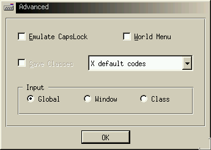

Next Previous Table of Contents

Emulate Caps Lock:
For some keyboards (e.g. Russian, Greek) there are problems with the default CapsLock behavior. If you activate this option, you instruct the International Keyboard to emulate CapsLock in order to fix this problem. The ``Caps Lock'' state (on or off) is then indicated by the color of the keyboard-indicator button instead of the corresponding keyboard LED.
World Menu:
If you activate this option, you can get a International Keyboard pop-up menu in any active window by pressing and holding down the Switch key combination until the menu appears.
Save Classes:
If the the selection in the Input section (see below) is
``Class'', you may
activate the ``Save Classes'' option so that
the
association of a given keyboard map with a given class
of windows is automatically saved at the end of each KDE Session,
and restored at the beginning of the next session. This means
that, for example, if the
the Russian keyboard map is selected for use in your Kedit
windows when you log out
today, you will get it automatically in your Kedit windows
when you log in tomorrow.
Keyboard codes:
The pull-down menu allows you to choose to use the keyboard codes native to your particular type of keyboard, instead of the X default codes used by the X Window system.
Input:
This determines how the keyboard maps are associated with different windows. You can select one of three choices:
Kedit program is running,
you will automatically also get the Russian keyboard in any
other Kedit window, until you switch keyboards again.( Back to the ``General Settings'' main Help page.)
Next Previous Table of Contents